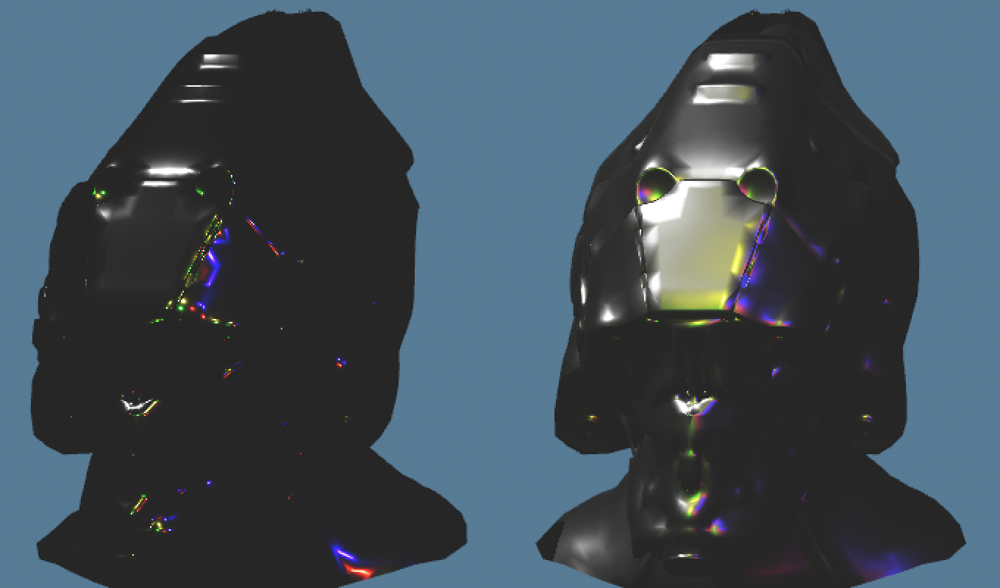
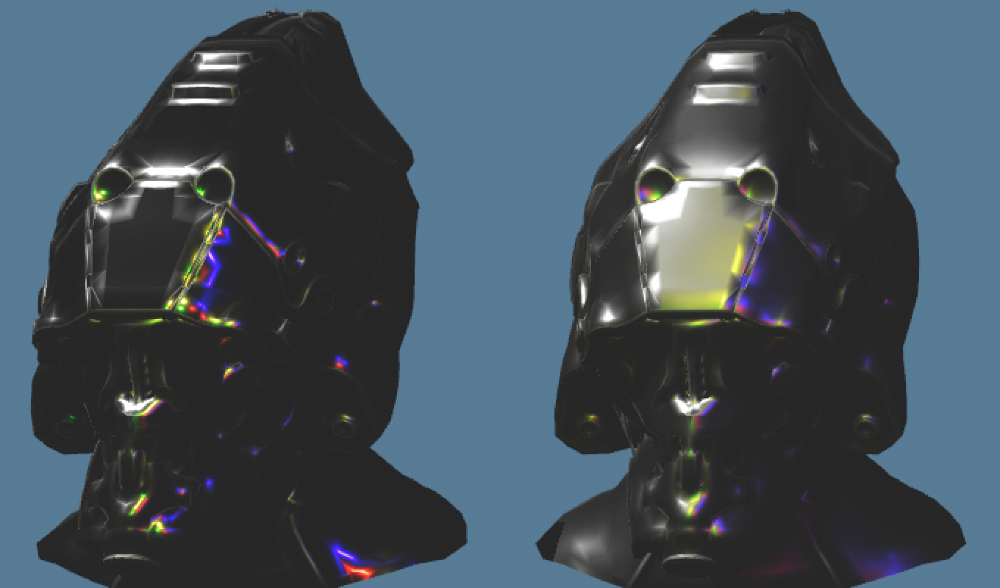

src/render/main_pass.rsThe render pass that shades the frame's draw, both culling phases' Instances, at depth equal into the 4x MSAA colour, once per pixel for each triangle that covers a sample: it sums glTF 2.0's metallic-roughness BRDF over the pixel's directional lights and its Froxel's point lights, each unless the shadow mask hides it, adds the ambient term and the emissive, and resolves the exposed colour into the HDR target.
Describes main at b3d764b4 (2026-11-04). A change to the pass rewrites this page and moves the commit; nothing is appended. Read first: MSAA for samples, fragments and the resolve, The depth pre-pass for the depth this pass tests against and the vertices it pulls, The shadow mask pass for the bits it reads.
MainPass::record_lit_passThe lit pass is the last pass of the opaque frame. Every surface it shades is already in the depth target, so it shades only the fragments whose depth equals the one kept there, and every shadow it reads is already in the mask.
The frame's passes with shadow rays on, in the order the GPU receives them
The depth pre-pass draws phase one's Instances into depth, phase two's depth pass the rest, and the shadow mask pass traces from that depth. With shadow rays off neither of the last two runs, so the lit pass draws phase two's Instances into depth itself, with the depth pre-pass's vertex stage and a fragment stage that writes nothing, and then shades.
let mut lit_pass = encoder.begin_render_pass(&wgpu::RenderPassDescriptor {
label: Some(LIT_PASS),
color_attachments: &[
// This is what @location(0) in the fragment shader targets
Some(render_targets.color_attachment(background)),
],
depth_stencil_attachment: Some(render_targets.final_depth_attachment(self.keeps_depth)),
occlusion_query_set: None,
timestamp_writes,
multiview_mask: None,
});
self.bind(&mut lit_pass, bind_groups.iter().copied());
if !self.shadow_rays {
lit_pass.set_pipeline(&self.lit_pass_depth_pipeline);
lit_pass.draw_indexed_indirect(&self.frame_draw_buffer, PHASE_TWO_DRAW_OFFSET);
}
lit_pass.set_pipeline(&self.lit_pipeline);
lit_pass.draw_indexed_indirect(&self.frame_draw_buffer, 0);MainPass::record_lit_pass, src/render/main_pass.rs.
The colour attachment is the 4x multisampled colour, cleared to the frame's background, which Frame data carries from the scene's Environment, exposed, clamped and weighted as the shader treats what it draws (section 8). Its samples are discarded and it resolves into the HDR target as the pass ends, so where the adapter allows, as Metal does on Apple GPUs, it is memoryless: it never leaves tile memory. The depth attachment is loaded, and discarded at the end: a pass that writes depth and stores it writes the whole 4x target back, a measurable cost at 1440p on the M4 Pro, so the depth is kept only for the light count pass, which the count_point_lights switch turns on and Praxis ships without.
The lit pipeline's depth state passes Equal and writes nothing; every pipeline of the main pass rasterises alike, with back faces culled and counter-clockwise fronts, so each sample meets exactly the depth the depth passes kept there.
pub fn depth_equal_state() -> wgpu::DepthStencilState {
wgpu::DepthStencilState {
depth_write_enabled: Some(false),
depth_compare: Some(wgpu::CompareFunction::Equal),
..depth_stencil_state()
}
}depth_equal_state, src/render/targets.rs; depth_stencil_state is the depth passes' reverse-Z Greater.
The pipeline is created with the Render switches' pipeline constants, so with shadow rays off the shader's SHADOW_RAYS branch reads nothing from the mask, and with the froxel_lights switch off its FROXEL_LIGHTS branch sums every point light: brute force, the reference the Froxel lists must match.
VertexOutput · vs_mainThe rasteriser tests coverage and depth at each of a pixel's four samples, but the fragment shader runs once per pixel for each triangle that covers any of them, and its colour lands in the samples that triangle covers. A pixel inside a triangle is shaded once; an edge pixel once per triangle.
vs_main is the depth passes' vertex work, unchanged: it unpacks the frame's draw's index into a Meshlet record and a vertex, pulls the vertex from the vertex Arena and places it camera-relative (The depth pre-pass). The lit pass keeps all of its output, where the depth passes keep the position, or the position, normal and Material ID.
struct VertexOutput {
// Invariant in both passes, which compute it alike, so the lit pass's
// depth-equal test meets exactly the depths the pre-pass kept.
@builtin(position) @invariant clip_position: vec4<f32>,
@location(0) camera_relative_position: vec3<f32>,
@location(1) normal: vec3<f32>,
@location(2) uv: vec2<f32>,
@location(3) @interpolate(flat) material_id: u32,
@location(4) tangent_world: vec4<f32>, // xyz = world tangent, w = bitangent sign
}main.wgsl.
The position is @invariant: WGSL then requires it to be computed the same way wherever the same expressions compute it, which is what lets an Equal test meet the depth another pipeline wrote. The Material ID is flat: every fragment of a triangle reads the value one vertex wrote. Reading any flat input also keeps the Apple M4 Pro from merging the fragments of neighbouring triangles that share indices, so every sample is shaded as the triangle that covers it, and the depth passes read one for the same reason (The depth pre-pass).
fs_main takes the samples its fragment covers as sample_mask, kept to the pixel's four. It needs them only to choose which shadow mask surface it shades (section 7).
fs_main · src/assets/material.rsEvery Texture is sampled before anything else, so no sample runs under non-uniform control flow. The colour Channels are sampled at 16x anisotropy, the data Channels at 4x.
let material = materials[in.material_id];
let albedo_layer = layer_class_and_slice(material.layers.x);
let normal_layer = layer_class_and_slice(material.layers.y);
let metallic_roughness_layer = layer_class_and_slice(material.layers.z);
let occlusion_layer = layer_class_and_slice(material.layers.w);
let emissive_layer = layer_class_and_slice(material.extra.x);
let albedo =
textureSample(albedo_textures[albedo_layer.x], colour_sampler, in.uv, albedo_layer.y);
let metallic_roughness = textureSample(
metallic_roughness_textures[metallic_roughness_layer.x],
data_sampler,
in.uv,
metallic_roughness_layer.y,
).rg;
let occlusion = textureSample(
occlusion_textures[occlusion_layer.x],
data_sampler,
in.uv,
occlusion_layer.y,
).r;
let emissive = textureSample(
emissive_textures[emissive_layer.x],
colour_sampler,
in.uv,
emissive_layer.y,
).rgb;
let normal_sample =
textureSample(normal_textures[normal_layer.x], data_sampler, in.uv, normal_layer.y).rg;fs_main, main.wgsl; layer_class_and_slice is in common.wgsl.
The Material ID indexes the Material table; the Material's layers name, for each Channel, the Layer to sample. layer_class_and_slice splits it into its Texture class, which indexes that Channel's binding array of texture arrays, and its slice of that class's array, so the bind group holds an array per class rather than a texture per Texture. Layer 0 of every Channel is a neutral default, so a Material without a Channel samples a Texture that changes nothing. textureSample picks its mip from the screen-space derivatives of the UV, which exist only while every invocation of the 2×2 quad runs the same code; sampling first keeps that true by construction, which naga does not check.
The Material bind group holds one sampler per kind of Channel, both trilinear and repeating:
const COLOUR_ANISOTROPY: u16 = 16;
const DATA_ANISOTROPY: u16 = 4;fn trilinear_sampler(device: &wgpu::Device, label: &str, anisotropy: u16) -> wgpu::Sampler {
device.create_sampler(&wgpu::SamplerDescriptor {
label: Some(label),
address_mode_u: wgpu::AddressMode::Repeat,
address_mode_v: wgpu::AddressMode::Repeat,
mag_filter: wgpu::FilterMode::Linear,
min_filter: wgpu::FilterMode::Linear,
mipmap_filter: wgpu::MipmapFilterMode::Linear,
anisotropy_clamp: anisotropy,
..Default::default()
})
}src/assets/material.rs.
Where a pixel's footprint on a surface is long and thin, an anisotropic sampler takes several trilinear probes along its length, each from the mip whose texels match its width, and averages them. EXT_texture_filter_anisotropic's rule, which the Vulkan specification keeps, gives the count and the level from how fast the UV changes per pixel along the screen's two axes:
Past the cap, the level follows the length divided by the cap, coarser than the width needs, and the Texture blurs across. Both specifications leave the scheme to the implementation, which may round N. wgpu clamps every sampler's anisotropy to 1 on an adapter without the ANISOTROPIC_FILTERING downlevel flag, so the Capability floor requires it.
Averaging probes averages the normal map's tilted normals along the footprint, and tangent_space_normal rebuilds the result to unit length: the spread the average removed is in neither the normal nor the roughness. Two things put it back. The cooker widens each mip's roughness by the spread of the normals it averaged, after Toksvig, which covers detail finer than the mip's texel (Texture cooking). The lit pass widens roughness again by how fast the shading normal turns from pixel to pixel (section 5). Why a box-filtered mip lets through detail a pixel cannot show is the subject of Box filtering.
fs_main · tangent_space_normalThe normal map's texel is a direction in the triangle's tangent frame, rebuilt from two stored coordinates; the frame is re-orthogonalised per fragment, since interpolation bends the tangent off the normal.
let geometric_normal = normalize(in.normal);
let interpolated_tangent = in.tangent_world.xyz;
let tangent = normalize(
interpolated_tangent - geometric_normal * dot(geometric_normal, interpolated_tangent)
);
let bitangent = cross(geometric_normal, tangent) * in.tangent_world.w;
let tangent_to_world = mat3x3<f32>(tangent, bitangent, geometric_normal);
let normal = normalize(
tangent_to_world * tangent_space_normal(normal_sample, material.metallic_roughness.z)
);fs_main, main.wgsl.
The vertex shader carries the tangent through the Instance's rotation-scale and the normal through its normal matrix, the inverse-transpose, since only normals need it. Gram-Schmidt removes from the interpolated tangent its part along the normal; the bitangent is rebuilt with the sign glTF stores in the tangent's fourth component. A cooked normal Texture holds only x and y, in BC5's two channels; tangent_space_normal rebuilds z as the positive root of x² + y² + z² = 1, zero where block error carries x and y past the unit circle, and scales x and y by the Material's normal scale, as glTF's normal Texture defines it. glTF normalises last, which the lit pass does once the frame has turned the normal into World space.
specular_antialiased_roughnessA pixel shaded once evaluates the BRDF at one normal. Where the normal turns across the pixel by more than a highlight is wide, the pixel catches the highlight or misses it, and which changes as anything moves. Averaging a narrow lobe over a spread of normals gives close to a wider lobe, so the lit pass widens roughness by the normal's spread across the pixel and shades once.
let surface = decode_surface(
material,
albedo,
metallic_roughness,
occlusion,
emissive,
dpdx(normal),
dpdy(normal)
);fs_main, main.wgsl: the shading normal's screen-space derivatives, taken after the normal map and before any branching on lights.
dpdx and dpdy are differences between horizontal and vertical neighbours of the 2×2 quad the GPU shades in. The lit pass shades once per pixel under 4x MSAA, not per sample, so the neighbours are a pixel apart and the derivatives are per pixel, the footprint the filter assumes. They count the mesh's curvature and the normal map's detail together, since they difference the normal after the map.
In slope space a Beckmann lobe is a Gaussian of variance α²/2 per axis, and averaging one Gaussian over another adds their variances, so a lobe filtered by the pixel's spread of normals is, near enough, one whose α² grows by that spread. Tokuyoshi and Kaplanyan's isotropic filter, their eq. (4), models the pixel as a Gaussian of standard deviation σ = 0.5 pixels and caps what it adds at κ:
fn specular_antialiased_roughness(
roughness: f32,
normal_change_x: vec3<f32>,
normal_change_y: vec3<f32>
) -> f32 {
let normal_variance = PIXEL_FILTER_VARIANCE
* (dot(normal_change_x, normal_change_x) + dot(normal_change_y, normal_change_y));
let filter_alpha_squared = min(2.0 * normal_variance, MAXIMUM_FILTER_ALPHA_SQUARED);
let alpha = roughness * roughness;
return sqrt(sqrt(min(alpha * alpha + filter_alpha_squared, 1.0)));
}shading.wgsl. PIXEL_FILTER_VARIANCE is σ², MAXIMUM_FILTER_ALPHA_SQUARED is κ.
Toward a silhouette the normal turns ever faster per pixel; κ keeps a mirror there from widening past roughness 0.181/4 ≈ 0.65, and the sum is capped at 1, as the paper's listing saturates it. decode_surface widens the Material's roughness first and applies the floor, MINIMUM_ROUGHNESS, to the result, so a still normal, as on a flat floor, lands on the floor as it would unwidened.
| Roughness | Sphere 30 px across | Sphere 260 px across |
|---|---|---|
| 0.04, the floor | 0.258 | 0.089 |
| 0.1 | 0.260 | 0.112 |
| 0.3 | 0.335 | 0.301 |
| 0.5 | 0.509 | 0.500 |
Widened roughness at a sphere's centre, where each derivative is 1/radius per pixel, by this page's arithmetic from eq. (4). A pbr-sweep sphere is about 260 px across at 1440p; 30 px is a smaller or more distant object. Rough surfaces barely move: variances add, so a small spread beside a wide lobe changes little.

helmet's metallic row at 1440p, 2× zoom. The left helmet, roughness 0.1, shows isolated coloured sparkles where a pixel's centre caught one of the point lights.
src/render/shaders/shading.wgslEach light adds f(L, V) E (N·L)+: the BRDF times the illuminance on a surface facing the light, scaled by how far the surface turns from it. The BRDF is Appendix B's mix of a dielectric and a metal, computed in a form gathered by lobe that equals it exactly.
Light arriving is illuminance, in lux; light leaving toward the camera is luminance, in cd/m², the quantity each pixel holds, so the BRDF, their ratio, is per steradian (ADR 0023). Four unit vectors from the shaded point describe the geometry: N the normal, L toward the light, V toward the eye, and H = normalize(L + V), the normal of the microfacets that mirror L into V. reflected_luminance computes the per-light term:
let half_sum = light_direction + view_direction;
let half_vector = half_sum * inverseSqrt(max(dot(half_sum, half_sum), 1e-30));
let normal_dot_light = dot(normal, light_direction);
let normal_cross_half = cross(normal, half_vector);
let brdf = metallic_roughness_brdf(
surface,
normal_dot_light,
dot(normal, view_direction),
dot(normal, half_vector),
dot(normal_cross_half, normal_cross_half),
dot(view_direction, half_vector)
);
return brdf * illuminance * max(normal_dot_light, 0.0);reflected_luminance, shading.wgsl. Where L and V are opposite, L + V is zero; scaled by the inverse root of at least 10−30, H stays zero rather than NaN, and the specular lobe's χ+ zeroes it.
decode_surface multiplies each Material factor by its texel: base colour and its alpha, metallic from the cooked metallic-roughness texel's green and roughness from its red, emissive; occlusion is its texel alone. Roughness is then widened (section 5) and held at MINIMUM_ROUGHNESS, 0.04, or above: at α = 0 the distribution is a delta and the BRDF divides by zero, and Appendix B's source says never to use α = 0.
F, the share of light the surface reflects rather than lets in, is Schlick's approximation, F = F0 + (1 − F0)(1 − |V·H|)5. fresnel_weight multiplies the power out rather than calling pow, which has no value for the negative base a cosine rounded past 1 gives. D is the Trowbridge-Reitz (GGX) distribution of microfacet normals, α² χ+(N·H) / (π ((N·H)²(α² − 1) + 1)²), with α = roughness². V is Smith's height-correlated masking-shadowing over 4 |N·L| |N·V|, returning 0 where both cosines are, so a light along the surface reflects none.
fn distribution_ggx(normal_dot_half: f32, normal_cross_half_squared: f32, alpha: f32) -> f32 {
let alpha_squared = alpha * alpha;
let denominator = max(
normal_dot_half * normal_dot_half * alpha_squared + normal_cross_half_squared,
alpha_squared
);
let distribution = alpha_squared / (PI * denominator * denominator);
return select(0.0, distribution, normal_dot_half > 0.0);
}distribution_ggx, shading.wgsl.
D's denominator is summed as (N·H)²α² + |N × H|², since 1 − (N·H)² = |N × H|² for unit vectors by Lagrange's identity. Near the peak at the roughness floor N·H lies a few f32 steps below 1, so 1 − (N·H)² computed from it errs by several percent, one way, and a white metal seen head-on reflected 1.1% more light than it received; the cross product's components are of the order of the angle between N and H and keep their relative precision. Filament's mobile path computes D the same way. The max changes nothing for unit vectors, whose sum is at least α², and keeps a zero H finite.
Appendix B's material is mix(dielectric_brdf, metal_brdf, metallic). A dielectric is a diffuse lobe, base colour over π, under a specular lobe mixed by its Fresnel term at F0 = 0.04, the reflectance of an index of refraction of 1.5; a metal is a specular lobe alone whose F0 is the base colour. Schlick's F is linear in F0, so the two specular lobes, weighted by metallic, are one lobe with its F at the mixed F0:
let weight = fresnel_weight(view_dot_half);
let dielectric_fresnel = DIELECTRIC_BASE_REFLECTANCE
+ (1.0 - DIELECTRIC_BASE_REFLECTANCE) * weight;
let diffuse_share = (1.0 - surface.metallic) * (1.0 - dielectric_fresnel) / PI;
let base_reflectance = mix(
vec3<f32>(DIELECTRIC_BASE_REFLECTANCE),
surface.base_color,
surface.metallic
);
let specular_fresnel = base_reflectance + (vec3<f32>(1.0) - base_reflectance) * weight;
return diffuse_share * surface.base_color + specular_fresnel * specular;metallic_roughness_brdf, shading.wgsl; specular is D times V.
The gathered form builds one three-channel specular lobe per light where Appendix B's own builds two and mixes them; the oracle compares the two forms in f64. The published 2.0.1 page gives a simplified mix that weights the diffuse lobe by the Fresnel term at the blended F0, which agrees with Appendix B only where metallic is 0 or 1; SciFiHelmet's metallic is fractional over most of it.
fs_main · point_light_luminanceThe directional lights come first in the light buffer, then the point lights; a pixel sums every directional light and the point lights its Froxel lists, in light order, each dimmed by the share of it the shadow mask hides.
With shadow rays on, the fragment loads its pixel's samples texel. If any sample it covers shows the mask's second surface it reads that surface's word, otherwise the nearest surface's; at the nearest surface, the first seven directional lights' verdicts at each sample stand in for their bits, so a shadow's edge resolves across the pixel as geometry's does. The rules, and why they hold, are on The shadow mask pass.
if SHADOW_RAYS {
let pixel = vec2<u32>(in.clip_position.xy);
let samples = textureLoad(shadow_mask_samples, pixel, 0).r;
nearest_surface = (covered & samples) == 0u;
mask = textureLoad(shadow_mask, pixel, select(1u, 0u, nearest_surface), 0).rg;
sample_verdicts = samples >> SAMPLE_COUNT;
}fs_main, main.wgsl.
The first directional light is shaded whether or not the light buffer holds one: a branch around it slowed the lit pass on the M4 Pro, so without one its illuminance is zero and a fixed direction keeps the term finite. Each directional light's illuminance is its colour times its lux, times one minus directional_hidden_share; its direction is the negated offset its entry holds.
With the froxel_lights switch on, as shipped, the fragment finds its Froxel from its pixel and its view depth and walks that Froxel's list, which holds the indices of the point lights that may reach it, in light order (The Froxel pass). A light's mask bit follows the directional lights' at its entry in the list. Where the Froxel slice the mask's word was traced in differs from the fragment's, which happens where a slice boundary falls between the traced sample and this fragment, froxel_mask_bit finds the light in the word's Froxel's list by binary search instead.
for (var entry = 0u; entry < point_light_count; entry++) {
var index = light.directional_light_count + entry;
if FROXEL_LIGHTS {
index = froxel_lists[froxel].lights[entry];
}
let point = lights[index];
let position = point_light_position(point, camera.anchor, camera.offset);
var bit = light.directional_light_count + entry;
if SHADOW_RAYS && FROXEL_LIGHTS && mask_froxel != froxel {
bit = froxel_mask_bit(mask_froxel, index);
}
let intensity = point.intensity * f32(!masked(mask, bit));
outgoing_luminance += point_light_luminance(
surface,
normal,
view_direction,
position - in.camera_relative_position,
intensity,
point.range
);
}fs_main, main.wgsl.
A point light's position reaches the GPU as an Anchor plus an offset, which point_light_position composes relative to the camera (ADR 0014). Its intensity is its colour times its candela. A point light emits over a sphere of directions, so the illuminance on a surface facing it falls as the inverse square of the distance, inside KHR_lights_punctual's range window, which falls to exactly 0 at the light's range and stays there, so a Froxel that leaves the light off its list drops nothing it would add:
fn point_light_attenuation(distance_squared: f32, range: f32) -> f32 {
let ratio_squared = distance_squared / (range * range);
let window = clamp(1.0 - ratio_squared * ratio_squared, 0.0, 1.0);
return window / distance_squared;
}let distance_squared = max(dot(light_offset, light_offset), MINIMUM_LIGHT_DISTANCE_SQUARED);
let illuminance = intensity * point_light_attenuation(distance_squared, range);
let light_direction = light_offset * inverseSqrt(distance_squared);
return reflected_luminance(surface, normal, view_direction, light_direction, illuminance);point_light_attenuation and point_light_luminance, shading.wgsl.
Everything is in distance squared: (d / r)4 is (d² / r²)², so the window needs no root, and one inverse root turns the offset into the direction. Distance squared is held at 1 cm² or more, MINIMUM_LIGHT_DISTANCE_SQUARED, as though the light were a sphere 1 cm in radius, as Filament holds it; within that, the direction shortens with the distance and is zero at the light itself, which adds nothing rather than NaN.
ambient_luminance · resolve_weightedThe pixel's luminance is the ambient term, the lights' sum and the emissive. It is exposed and clamped in f32 before fp16 stores it, and weighted so the hardware's plain average of the samples is a luminance-weighted one.
let luminance = ambient_luminance(surface, light.ambient_illuminance.rgb) + outgoing_luminance
+ surface.emissive;
// Pre-exposed in f32 and clamped to fp16's range before the HDR target
// stores it (ADR 0023), weighted for the resolve.
let exposed = min(luminance * camera.exposure, vec3<f32>(LARGEST_HALF));
return vec4<f32>(resolve_weighted(exposed), surface.opacity);fs_main, main.wgsl.
Ambient. The scene's Environment gives a constant ambient illuminance E, in lux, which prepare copies into the light uniform each frame. ambient_luminance returns E/π times the base colour, darkened by occlusion, which glTF applies to indirect light only. Under the same luminance from every direction, the illuminance is π times it, so E/π is the surroundings' luminance, and the base colour is about what a white-lit dielectric's diffuse lobe, or a metal's specular one, reflects of it. Metals take it too, as the irradiance probes it stands in for, ADR 0020's, will light rough specular reflection.
Exposure. camera.exposure is the scale the scene's EV100 sets. Exposing here, in f32, keeps a sun glint at the roughness floor, many stops past fp16's largest value in absolute units, within what the target can hold; the clamp to LARGEST_HALF, 65504, keeps any backend from storing infinity.
The weight. resolve_weighted divides the colour by one plus its luminance. The resolve averages the four samples as stored, and the tonemapping pass undoes the weight, so the result is the samples' average weighted by 1/(1 + luminance): one glinting sample no longer whitens its whole pixel. The resolve and its proof are on MSAA. The alpha written is the base colour's, which no blending reads yet.
cargo testEvery shading function has an oracle: a GPU kernel calls the very WGSL the pass runs and its results are compared with values worked out apart from the shader, in f64 from the source as the source writes it. Renderer tests pin the pass's seams, and the Goldens hold every Reference scene's image.
| Test | Where | What it pins |
|---|---|---|
fresnel_rises_from_the_base_reflectance_to_one_at_grazing | shader_function_tests.rs | F is F0 head-on and one f32 step past, and 1 at grazing, for three F0 |
distribution_ggx_integrates_to_one_over_the_hemisphere | shader_function_tests.rs | D's projected integral is 1, from the floor to roughness 1, and its peak 1/(πα²) |
distribution_ggx_matches_appendix_b_from_the_roughness_floor_to_one | shader_function_tests.rs | D against Appendix B in f64, from below the horizon to the peak and from the floor's α to 1 |
smith_visibility_matches_appendix_b_and_keeps_g_within_zero_to_one | shader_function_tests.rs | V against Appendix B in f64, and G within [0, 1] |
metallic_roughness_brdf_matches_appendix_b_and_is_reciprocal | shader_function_tests.rs | the gathered BRDF against Appendix B's full code in f64, and equal with L and V swapped, over roughness, metallic and angles |
reflected_luminance_follows_the_brdf_and_a_white_metal_reflects_at_most_what_it_receives | shader_function_tests.rs | a white furnace summed over half vectors, seven roughnesses from the floor, three views, three materials: each sum within 10−5 of the f64 one, a white metal at most 1 |
specular_antialiased_roughness_adds_the_normals_variance_to_alpha_squared | shader_function_tests.rs | eq. (4) in f64: a still normal, each axis alone, a change reaching κ, a roughness reaching the cap at 1 |
decode_surface_scales_each_texel_by_its_factor_and_floors_roughness | shader_function_tests.rs | each factor times its texel, and the floor |
tangent_space_normal_scales_x_and_y_and_normalises_as_gltf_writes_it | shader_function_tests.rs | the rebuilt z, the scale and a scale of 0 |
point_light_attenuation_falls_by_inverse_square_to_zero_at_the_range | shader_function_tests.rs | KHR's window in f64, exactly 0 at and past the range |
point_light_luminance_attenuates_the_intensity_it_reflects | shader_function_tests.rs | lights near and far, past the range and at the shaded point, where it adds 0 |
ambient_luminance_is_the_base_colour_over_pi_darkened_by_occlusion | shader_function_tests.rs | the ambient term |
the_weighted_resolve_undone_averages_samples_by_one_over_one_plus_luminance | shader_function_tests.rs | resolve_weighted and resolve_unweighted against the weighted average |
each_primitive_draws_with_its_own_material_unless_its_instance_overrides_it | renderer.rs | the Material ID the Meshlet record carries |
nine_point_lights_each_light_the_surface_under_them | renderer.rs | lit through Froxel lists, the image brute force draws |
an_edge_pixel_resolves_between_a_shadowed_surface_and_a_lit_one | renderer.rs | each fragment of an edge pixel reads its own surface's word |
every_binding_is_visible_to_exactly_the_stages_that_use_it | shader_tests.rs | each binding the pass's module declares reaches the entry points that use it, and no others |
| the Goldens | tests/goldens.rs | every Reference scene's frame matches its Golden, and town renders the same culled and unculled |
Test names at the commit above. The BRDF's terms must land within 4 × 10−6 of the f64 reference, relative; shading from unit vectors within 5 × 10−5, since D near its peak at the floor turns f32's rounding of each cosine into more.
praxis report bench/baselines/<adapter>The lit pass is the frame's largest pass after the shadow mask pass in most scenes, and the largest of all in town on DX12. Its time grows with the pixels a scene covers, the lights each lists and the triangles it draws again: town's is several times any other scene's.
Medians in microseconds from the committed Baselines, release builds at 2560×1440 with 4x MSAA over 1,800 measured frames. The lit pass's time and the GPU frame are from frames with shadow rays on; ADR 0019's gate, which spans from the first culling dispatch to the end of the lit pass, from frames with them off. On Metal neighbouring passes can overlap, so a pass's own timestamps can include time spent waiting on the one before; the gate and the GPU frame count shared time once.
| Scene | Adapter | lit_pass | Gate, rays off | GPU frame |
|---|---|---|---|---|
shadows | Apple M4 Pro, Metal | 496.8 | 849.5 | 4,094.7 |
shadows | RTX 2070 SUPER, Vulkan | 395.3 | 672.9 | 2,338.8 |
shadows | RTX 2070 SUPER, DX12 | 428.0 | 750.5 | 2,341.4 |
helmet | Apple M4 Pro, Metal | 808.5 | 1,210.1 | 6,689.1 |
helmet | RTX 2070 SUPER, Vulkan | 481.3 | 865.1 | 2,736.3 |
helmet | RTX 2070 SUPER, DX12 | 501.8 | 908.4 | 2,717.7 |
pbr-sweep | Apple M4 Pro, Metal | 470.2 | 773.8 | 3,851.5 |
pbr-sweep | RTX 2070 SUPER, Vulkan | 289.5 | 548.0 | 1,692.5 |
pbr-sweep | RTX 2070 SUPER, DX12 | 288.3 | 571.4 | 1,611.1 |
normal-tangent | Apple M4 Pro, Metal | 475.8 | 818.2 | 3,664.5 |
normal-tangent | RTX 2070 SUPER, Vulkan | 305.7 | 565.2 | 1,680.2 |
normal-tangent | RTX 2070 SUPER, DX12 | 309.2 | 595.9 | 1,639.2 |
uv-grid | Apple M4 Pro, Metal | 447.8 | 763.0 | 2,917.0 |
uv-grid | RTX 2070 SUPER, Vulkan | 288.2 | 537.6 | 1,747.0 |
uv-grid | RTX 2070 SUPER, DX12 | 288.6 | 563.1 | 1,685.5 |
minification | Apple M4 Pro, Metal | 528.5 | 835.2 | 3,003.5 |
minification | RTX 2070 SUPER, Vulkan | 387.1 | 634.8 | 1,846.3 |
minification | RTX 2070 SUPER, DX12 | 405.4 | 720.9 | 1,819.8 |
far-coplanar | Apple M4 Pro, Metal | 344.5 | 677.2 | 2,598.5 |
far-coplanar | RTX 2070 SUPER, Vulkan | 306.9 | 715.6 | 1,594.7 |
far-coplanar | RTX 2070 SUPER, DX12 | 417.5 | 870.4 | 1,622.2 |
orrery | Apple M4 Pro, Metal | 335.0 | 642.6 | 2,917.3 |
orrery | RTX 2070 SUPER, Vulkan | 183.2 | 422.4 | 1,424.8 |
orrery | RTX 2070 SUPER, DX12 | 168.8 | 448.5 | 1,110.5 |
texture-wall | Apple M4 Pro, Metal | 607.2 | 14,109.0 | 15,975.0 |
texture-wall | RTX 2070 SUPER, Vulkan | 199.4 | 513.6 | 1,207.2 |
texture-wall | RTX 2070 SUPER, DX12 | 196.7 | 558.9 | 1,095.3 |
crowd | Apple M4 Pro, Metal | 712.5 | 1,297.0 | 3,747.5 |
crowd | RTX 2070 SUPER, Vulkan | 423.9 | 840.5 | 2,169.8 |
crowd | RTX 2070 SUPER, DX12 | 464.9 | 924.8 | 1,970.2 |
town | Apple M4 Pro, Metal | 3,762.6 | 8,612.1 | 19,935.0 |
town | RTX 2070 SUPER, Vulkan | 2,995.3 | 4,991.8 | 9,395.0 |
town | RTX 2070 SUPER, DX12 | 3,248.1 | 5,306.9 | 9,279.4 |
bench/baselines/apple-m4-pro, nvidia-geforce-rtx-2070-super and nvidia-geforce-rtx-2070-super-dx12 at the commit above. Two gates on the reference machine, the Apple M4 Pro, are over their Budget: texture-wall's, set by its ten thousand bound Textures rather than its shading, and town's, set by the triangles it draws.
| Target | Format | Bytes per pixel |
|---|---|---|
| multisampled colour, 4 samples | Rgba16Float, 4x MSAA, transient | 32, none where memoryless |
| HDR target | Rgba16Float | 8 |
The depth target the pass tests against is the depth pre-pass's, counted there.
Forward, at depth equal, after a depth pre-pass. ADR 0019 chose a clustered forward main pass, option A of its survey: the forward shapes are the only ones whose 4x MSAA costs no more memory than its 4x depth, since the multisampled colour resolves inside the pass and never leaves tile memory. Shading at depth equal shades each covered sample's visible triangle once and nothing hidden. The ADR's reopen clause fired on town, whose gate is over its 6 ms, and is spent there: both alternatives it names were prototyped on town, A stays, and the gate is re-checked once LOD reduces the triangles every option draws.
Option B, a visibility pre-pass. A per-sample Instance-and-triangle ID, a compute pass that marks the triangles owning a sample and compacts the lit pass's draw to them. The lit pass shrank to about two thirds of A's, but the ID and compaction passes cost more than it saved: B's gate read 1.36 times A's at Meshlet granularity and 1.19 times at triangle granularity; ADR 0019 records both.
Option D, a visibility buffer shaded in compute. IDs written by the depth passes, then a compute pass that rebuilds each pixel's triangles, shades each distinct one once and weights it by its samples, the lit pass's own MSAA resolve. Its gate read from 2.3% under A's to 1.2% over it: rebuilding the triangles in compute costs about what rasterising them again does. Adopting D for its own sake would need PRIMITIVE_INDEX in the Capability floor, which it is not, 59 MB of IDs at 1440p, a storage-buffer limit above the floor's nine for further inputs, and a forward pass beside it for transparency. What the prototype showed of the M4 Pro's quad derivatives is on Metal quirks.
Appendix B exactly, every term with an oracle. glTF content renders as authored only if the BRDF is the one glTF specifies, so each term follows Appendix B's specification source, which revised the published 2.0.1 page's sample implementation: its height-correlated V and full mix replace 2.0.1's separable G and simplified mix. Gathered by lobe, the mix costs one specular lobe per light; mixed as Appendix B writes it, the lit pass took measurably longer at 1440p on the M4 Pro (docs/performance.md).
Widened roughness, not more samples or history. Shading per sample would move specular aliasing only a factor of two finer at up to four times the shading; averaging over frames is ruled out by ADR 0008, which keeps screen-space history out of the frame. Tokuyoshi and Kaplanyan's filter needs only the quad's derivatives the forward pass already has, and its widening plus the precise D cost town's lit pass about 2%, which was accepted.
Two samplers. 16x everywhere left single-pixel sparkle along minification's highlight, from normals the probes took at finer mips than the cooked roughness was widened for; data Channels at 4x read coarser mips, whose roughness carries the spread, removed it, cost less, and moved the checker's albedo, still sampled at 16x, 3% further from a supersampled reference. ADR 0017 records the 4x as a choice of cost and image, not a cap.
The first directional light without a branch. An if on the light count around the first light's term cost the M4 Pro's main pass 10 to 12% (docs/performance.md); computing a light of zero illuminance is cheaper than skipping it.
Shadows read, not traced. The lit pass first traced its shadow rays inline. A ray query in the fragment shader held registers across the whole shading loop and cost the pass time on the M4 Pro even where it never ran, so the rays moved to the shadow mask pass, a compute pass before this one, and the lit pass reads a bit per light (ADR 0019, ADR 0020).
The weighted resolve. The hardware's resolve is a box average, so one glinting sample of exposed HDR outweighs three dark ones and the tone-mapped pixel goes white. Weighting by 1/(1 + luminance) before the resolve and undoing it after makes the hardware's average a weighted one at the cost of a division per pixel (MSAA).
Photometric units and a constant ambient. Lights, ambient and background are in glTF's units, lux and candela and cd/m², with exposure an EV100 per scene (ADR 0023). The ambient term is a constant per scene until ADR 0020's irradiance probes replace it.
Appendix B's dielectric is not energy conserving. Its coupling of diffuse and specular, which Appendix B itself calls not very accurate, lets a white dielectric reflect more than it receives at grazing views; the furnace test bounds the diffuse lobe alone.
One bounce on the microsurface. No multiple scattering: a white metal at roughness 1 seen head-on reflects about 0.307 of what it receives, and rough metals read darker than they should.
Flat facets are not widened. A quad's derivatives never cross a triangle edge, so a flat facet with one normal across it gets no widening, and its highlight lights the facet whole or not at all, as a flat mirror does.
The footprint's length. Up to an anisotropy of 4, a data probe's mip matches the footprint's width, and the cooked roughness sees only the spread across it. The spread along the length now reaches roughness too, through the shading normal's screen-space derivatives that specular_antialiased_roughness widens it by (section 5). What the derivatives cannot see is detail finer than a pixel along the length that the averaged normal no longer carries.
Shading once per pixel. Within a triangle, a pixel is shaded at one point; what varies faster across it than the widening models, such as a texture's own sub-pixel detail, is the mips' and the samplers' to filter.
The weighted resolve's bias. A highlight smaller than a sample loses energy: its sample counts for less than its quarter of the pixel. Blends in the weighted space darken half-covered edges between very different luminances, which transparency will have to reckon with.
No transparency yet. The pass writes opaque colour; the sorted transparent pass ADR 0019 plans, sharing the Froxel lists and the depth, does not exist.
A constant ambient. Every surface receives the same indirect light, open sky or not, until the irradiance probes.
Primary sources the pass rests on, each with what it settles here; the engine's registry, docs/references.toml, holds the section and the verbatim quote under the key the code cites.
gltf-2.0-specular-brdf, gltf-2.0-metal-and-dielectric-brdf, gltf-2.0-fresnel, gltf-2.0-zero-roughness, gltf-2.0-roughness-mapping, and the 2.0.1 sample implementation it revised, gltf-2.0.1-sample-brdf. Khronos, CC BY 4.0.gltf-2.0-metallic-roughness, gltf-2.0-normal-texture-scale, gltf-2.0-occlusion, gltf-2.0-bitangentkhr-lights-punctual-rangetokuyoshi-2019-normal-derivatives, tokuyoshi-2019-roughness-matrixkaplanyan-2016-ndf-filteringfilament-ggx-lagrange-identity, filament-punctual-light-1cm. Apache-2.0.walter-2007-ggx, walter-2007-projected-areakaris-2013-weighted-averageLARGEST_HALF prevents; wgsl-f16-largest, vulkan-fp-conversionbt709-6-lumaANISOTROPIC_FILTERING; wgpu-core-30-anisotropy-clampsalvi-2012-sbaa-surfacesThe lit pass took its present shading in the third milestone. Its BRDF was rewritten from Appendix B, term by term with an oracle each, in place of a tutorial's constants and approximate terms; it then resolved exposed colour into an HDR target, summed point lights from Froxel lists rather than a fixed four, traced its shadows inline and handed them to the shadow mask pass, picked a mask layer per fragment and a share per directional light at shadow edges, settled its two samplers on a supersampled reference, and widened roughness by the normal's derivatives with D computed through |N × H|². The volume that narrated each step, with its measurements and images, is retired; this page describes the pass as it is, and Light units the units its luminance is in.